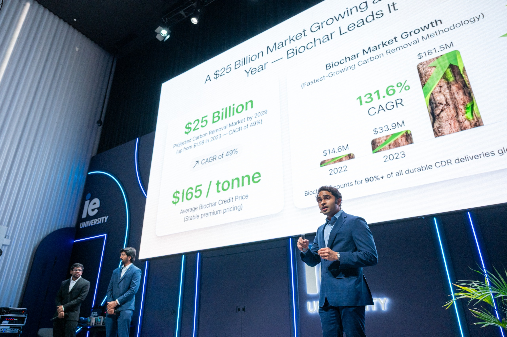

Selected Work
The working,
shown.
Models, deals and ventures. Each one carries the number it was judged on, including the ones that did not pay off.

Quantitative models
High-Frequency Volatility Forecasting
A hybrid GARCH-XGBoost pipeline forecasting 5-minute realized volatility on E-mini S&P 500 futures (ES=F), built to test whether machine-learning models adapt to volatility regime shifts faster than parametric baselines, and validated honestly enough to report when they don't.
The Problem
GARCH-family models are slow to react when volatility regimes shift. The question: can a non-linear ML model or a GARCH-ML hybrid react faster during shocks, and does any edge survive rigorous out-of-sample testing rather than in-sample overfitting?
The Build
End-to-end pipeline. Target = rolling realized volatility (288-bar / ~24h window of squared 5-min log returns). Features = lagged RV (t-1, t-3, t-6), 12-bar rolling mean/std of RV and returns, daily VIX and its change forward-filled onto 5-min bars, and cyclical time-of-day encodings (sin/cos of hour). The XGBoost model uses a custom asymmetric loss that penalizes under-prediction of risk 3× harder than over-prediction (gradient and hessian scaled by a penalty factor when y_true > y_pred), because under-forecasting volatility is the costly error in a risk model. A GARCH(1,1) baseline is fit with strict train-only parameter estimation and causal one-step-ahead forecasts. A 50/50 hybrid blends the ML and parametric forecasts. All four feed a volatility-targeting overlay (weight = clip(target_RV / forecast_RV, 0.1, 2.0)).
The Validation
Expanding-window walk-forward (three folds), an explicit train-vs-test regime-shift diagnostic, and a 1,000-iteration block bootstrap (288-bar blocks to preserve autocorrelation) for significance testing.
The Honest Result
Under the vol-targeting overlay, Sharpe ratios across Buy & Hold, GARCH, XGBoost, and Hybrid clustered tightly. The block bootstrap found the XGBoost-vs-GARCH Sharpe spread was not statistically significant over the test window, the 95% CI spanned zero. Reported as a clean null result: on this data the ML edge does not robustly beat the parametric baseline. The value of the project is the rigor of the framework that isolates where and why each model reacts to regime shifts, and the discipline to not overclaim.
Macroeconomic Regime Analysis
A deep-learning pipeline that detects unobservable macroeconomic regimes from FRED data using an autoencoder plus a Gaussian Mixture Model, then allocates portfolio weights dynamically per regime.
The Problem
Markets behave differently across macro regimes (expansion, contraction, stress), but regimes aren't directly observable and static allocations ignore them.
The Build
Feature engineering on standardized macro indicators, 12-month rolling moving averages, rolling volatilities, and YoY growth rates, to strip secular trends. A dense autoencoder (16→8→3→8→16 architecture) compresses sliding windows of macro features; high reconstruction MSE flags anomalous periods. A Gaussian Mixture Model then clusters the 3D latent space into distinct regimes. Portfolio weights are allocated dynamically based on the identified regime profile.
The Logic
The autoencoder is doing unsupervised dimensionality reduction so the GMM clusters on a clean low-dimensional manifold rather than noisy raw indicators; reconstruction error doubles as an anomaly/stress detector. This is a data-driven alternative to hand-labeled regimes.
Factor-Neutral Pairs Trading Pipeline
A production-grade quantitative trading pipeline that screens the entire S&P 500 universe using DBSCAN unsupervised machine learning to identify fundamentally identical stock pairs. Each candidate pair is then subjected to Engle-Granger cointegration testing, a two-step econometric method that mathematically proves mean-reversion before any trade signal is generated. Out of 118,833 fundamental twin pairs tested, 28,429 passed the cointegration filter at a 90% confidence level.
AI products
System Shift Portfolio
AI-driven green investment diversification model for ESG-aligned portfolio optimization.
The Problem
Traditional green finance often focuses too narrowly on end-products. Green investments frequently fail because they only benefit the green companies themselves, making the broader stakeholder chain less stable.
The Solution
I developed System Shift Portfolio, an AI-driven financial portfolio application. The app gathers environmental data from European firms and allows you to swipe through them based on your personal preferences. Once completed, it shows you exactly which Earth System Boundary you are primarily targeting with your investment.
The Execution
SSP helps you determine how to allocate your funds across the entire stakeholder chain, from the suppliers who provide materials to the green companies, all the way to the customers who buy their products and services. The tool ensures everyone in the ecosystem remains aligned and financially stable, driving long-term environmental impact while effectively hedging financial risks.
Wall‑Et
AI-powered voice and photo-based budgeting tool that delivers predictive financial insights.
The Problem
Traditional budgeting tools introduce too much friction for young professionals and underserved users, leading to poor financial tracking and literacy.
The Solution
I built an AI-powered budgeting application designed to remove data-entry friction entirely. Through Wall‑Et, you can speak directly into the app to break down your expenses and plan your monthly budget. Whether you use voice commands or simply take a picture of a bill, the AI automatically sorts the data into different categories and assigns it.
The Execution
Leveraging third-party AI automation tools, LLM APIs, Lovable, and Supabase, I architected a workflow that transforms unstructured voice commands and photo inputs into structured, predictive financial insights.
Consulting
Hyundai España AI Strategy
Tech Venture Lab finalist. AI-led customer retention approach with a projected 45% loyalty uplift, pitched to the Hyundai España CTO and CEO. Projection presented, not implemented.
The Challenge
As part of a month-long Tech Venture Lab consulting project, my team was tasked with finding a technological solution to combat customer churn and increase retention, even after the four-year free service period had ended.
The Approach
We adopted a rapid prototyping methodology, pressure-testing our assumptions early and pivoting when initial data demanded it. I led the quantitative strategy, defining core business KPIs such as Customer Acquisition Cost (CAC) and Payback Periods to ensure the technical solution was commercially viable.
The Outcome
We built an AI-led retention approach carrying a projected 45% loyalty uplift. Selected as finalists, and I co-presented the implementation roadmap to the CTO and CEO of Hyundai España. The 45% figure is a projection presented in that pitch. It was not implemented and no realised uplift is claimed.
Commercial execution
$3.5M Trade Line Launch
Identified an unserved Kraft paper supply gap across India and Sri Lanka, underwrote a $3.5M line against it, and turned it over in 9 months.
The Problem
Identified an unserved upstream supply gap for Kraft paper across India and Sri Lanka. Local manufacturers could not meet quality benchmarks, leaving buyers dependent on fragmented import channels.
The Solution
Built the scenario DCF and stress-tested it across shipping, raw material, blending and labour cost movements. Ran primary market research across Indian and Sri Lankan mills to size demand before committing capital, then negotiated the supply partnership with European mills and owned the resulting cost structure and margin at FourEM Global FZE.
Commercial Impact
$3.5M trade line underwritten and owned end to end, turned over in 9 months across India and Sri Lanka. Sourcing, logistics and multi-jurisdiction compliance all sat with the same person.
$100K Funding Study
Ran 500+ consumer interviews across 4 markets, then built the feasibility model behind a $100K pre-series raise.
The Problem
Data without a narrative is just noise. A sustainable footwear line lacked the market validation data required to attract pre-series investment. Investor confidence was low due to absence of quantitative demand evidence.
The Solution
At GSRV and Associates, I ran 500+ consumer interviews across 4 markets to test the viability of the sustainable footwear line, then translated the primary research into a financial feasibility model covering pricing and cost structure.
Commercial Impact
$100K pre-series raise closed with international investors. The research became the basis for the retail expansion strategy.
Ventures
Vaayubon (VAYU)
A carbon removal venture converting India's agricultural waste into durable biochar carbon removal. As Co-Founder and Chief Financial Officer I own the unit economics, the carbon credit pricing, and the measurement, reporting and verification approach. Modelled positive contribution margin per tonne with negative working capital, financed through forward offtakes.
The Problem
Agricultural residue across India is burned rather than used, and smallholder farmers carry thin margins. Article 6 of the Paris Agreement allows countries to authorise carbon credits for international transfer, and India has been setting out how that works domestically. That opened a defined window, and a specific risk: whether a credit counts at all depends on rules still being written. The venture was built around that question first.
The Solution
Agricultural residue is converted through pyrolysis into biochar, a stable carbon form that stays in the ground for centuries. That durability profile is what buyers of removal credits pay a premium for. Farmers receive an alternate source of income, and the venture issues carbon credits against the durable carbon stored.
The Execution
Aggregated 150+ farmers in Anantapur district, Andhra Pradesh, establishing the feedstock base. I own the financial model, the cost structure across sourcing, production, logistics and verification, and the commercial terms for farmer aggregation. Structured the forward offtake agreements. Evaluating Puro.earth and Verra biochar methodologies to anchor the MRV build. Pitched 15+ investors and prospective buyers; pre-seed conversations are active with no round closed. A digital measurement and verification layer combining ground sensors with satellite observation is on the roadmap rather than built.
Impact accounting
Value Balancing Alliance (VBA) Capstone
Extending the VBA–Deloitte carbon valuation framework to the full set of environmental impact drivers, water, waste, air and water pollution, land use, to estimate short- and long-term internalization rates and the forces driving externalities to become internalities.
The Context
Environmental externalities are recognized as one of humanity's core challenges. Traditionally treated as "outside" the business system, many are increasingly being internalized through regulation, investor pressure, and demand- and supply-side market shocks. The Value Balancing Alliance (VBA) quantifies these externalities using the Environmental Profit and Loss (EP&L) approach, applying value factors such as the Social Cost of Carbon.
The Benchmark
This capstone builds on the September 2025 VBA–Deloitte paper "Aligning Carbon Valuation with Decision-Making" and extends its reasoning beyond carbon. The carbon benchmark illustrates the logic: the Social Cost of Carbon is currently estimated around USD 244/tCO₂, the EU ETS market price is roughly USD 80/tCO₂, implying a regulatory internalization rate of ~33%. Corporate internal carbon prices and abatement costs sit around USD 39–46/tCO₂, representing a market internalization level of ~16–19%. Long-term, EU ETS prices are expected to exceed USD 250/tCO₂ by 2050, pushing the internalization rate above 100% of today's externality value.
The Application
My work applies this reasoning across the remaining environmental drivers, with a particular methodological focus on water consumption, using IPCC AR6 WG2 Chapter 4 as the scientific anchor. The output is a comparative framework of 2025-vs-2050 internalization rates per impact driver, per value-chain position, and per regional water-stress context, including payback-period analysis for proactive corporate investment under different internalization trajectories.